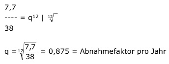

Aufgabe 236 Raucher riskieren Lungenkrebs. Schafft man es, aufzuhören, wird das Risiko zu erkranken mit den Jahren immer kleiner. Risikotabelle: Jahre 0 2 4 6 8 10 12 Risiko in Prozent 38 30 22 17 13 10 7,7 Nach wie viel Jahren ist das Risiko auf 10% des ursprünglichen gesunken? Da das Risiko nicht gleichmäßig abnimmt, ist von exponentieller Abnahme auszugehen. R12 = R0 * q12 7,7 = 38 * q12 |:38  Rn = R0 * qn Ursprüngliches Risiko = 100% = 1 0,1 = 1 * 0,875n Logarithmieren: lg 0,1 = lg 0,875n lg 0,1 = n * lg 0,875 |:lg 0,875 lg 0,1 - 1 n = ----------- = ---------- = 17,2 Jahre lg 0,875 - 0,058